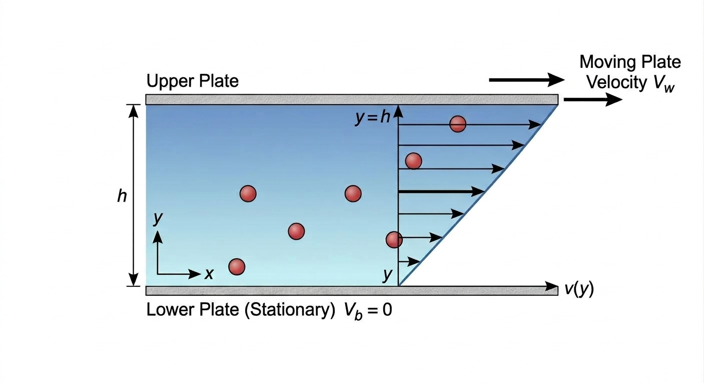
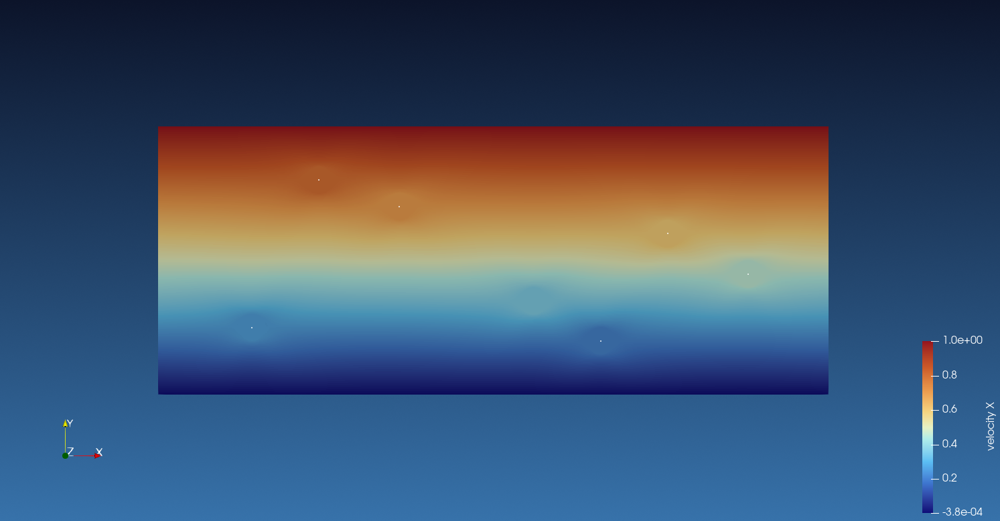
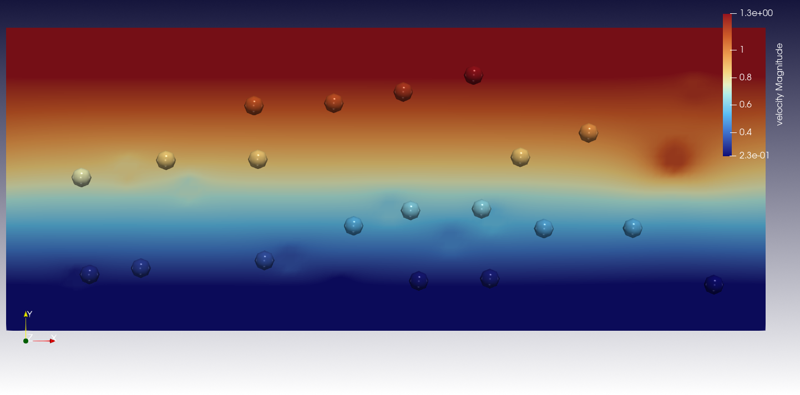
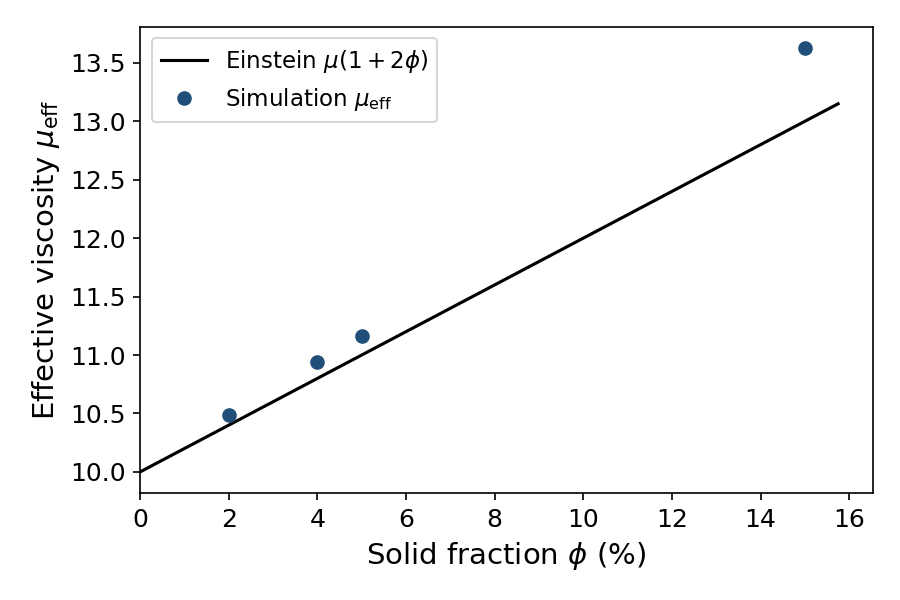
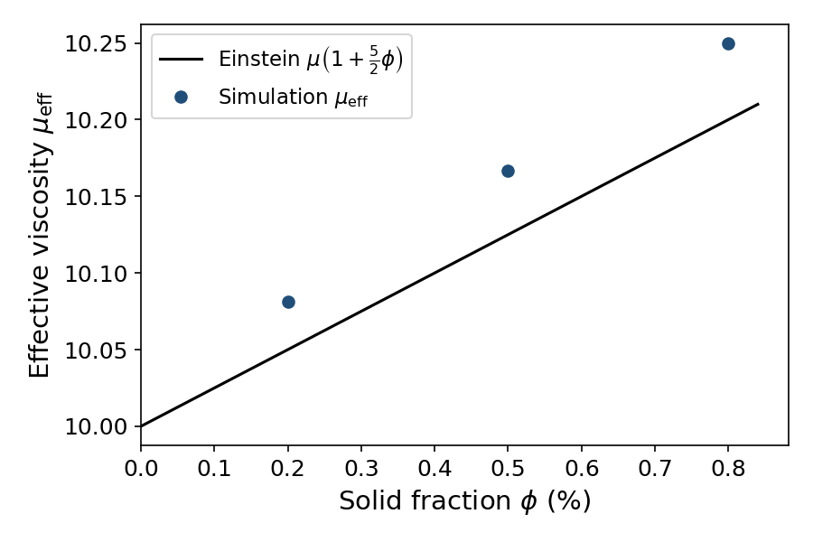
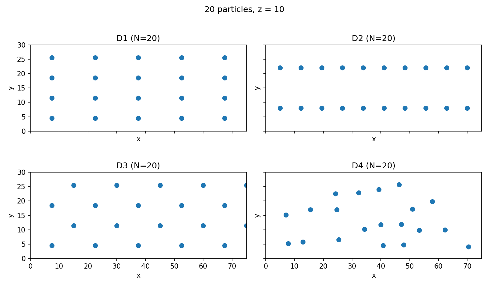

Couette Flow with Immersed Particles#
This example tests Einstein’s dilute viscosity on a Couette flow with rigid particles, in two and three dimensions. The wall shear force is compared with \(\mu(1 + 2\phi)\) in two dimensions [3] and with \(\mu(1 + \tfrac{5}{2}\phi)\) in three dimensions [1], [2]. The comparison shows where those formulae are sufficient, and where the measured viscosity departs from them. A short overview of Einstein’s viscosity law for dilute suspensions is given in [5].
Features#
Solver:
lethe-fluid-sharpCouette flow in two and three dimensions
Sharp-edge immersed boundary methods for static particles
Files Used in This Example#
All files are in examples/sharp-immersed-boundary/couette-2d-3d.
Base 2D parameter file:
couette-2d-7p.prmBase 3D parameter file:
couette-3d-20p.prm2D case generation Python script:
epsilon_2d.py3D case generation Python script:
epsilon_3d.pyArrangement generation Python script:
generate_arrangements_3d.py2D postprocessing Python script:
plot_viscosity_2d.py3D postprocessing Python script:
plot_viscosity_3d.py
Description of the Case#
A Newtonian fluid is sheared between a fixed plate and a plate moving at constant speed \(U\). Without particles the velocity profile is linear (Couette flow), \(u(y) = U y / h\), and the force on the moving plate is known:
where \(\mu\) is the dynamic viscosity of the fluid, \(U\) the speed of the moving plate, \(h\) the gap between the plates, \(y\) the coordinate normal to the plates measured from the fixed plate, and \(A\) the area of the plate in contact with the fluid. \(F_0\) is the force needed to keep the plate moving; the fluid exerts an equal and opposite force on the plate.
Rigid particles are then placed in the gap. Each particle is given the velocity of that linear profile at its center, so the particle follows the fluid and does not slip. The plates feel an extra force. Einstein’s theory attributes it to the solid fraction \(\phi\) [1], [2]. Essentially, this is caused by the disturbance in the velocity field generated by the rigid particles, even in the absence of drag.
The relation is written with the intrinsic viscosity \([\eta]\) [4]:
This is a dilute result: particles interact with the flow, not with each other. It is expected to be accurate at a few percent, and to drift once \(\phi\) is large. The coefficient \(5/2\) was derived for spheres [1], [2]. The two-dimensional analogue for circular discs is \([\eta] = 2\) [3]. The force on the moving plate is negative, because the fluid resists the motion. The effective viscosity plotted in the figures is obtained from the absolute wall force, \(\mu_{\mathrm{eff}} = \mu\,|F_x|/F_0\).
Two-Dimensional Channel#
The channel is \(50 \times 20\). The bottom plate is fixed and the top plate moves at speed 1. The streamwise direction is periodic. With \(\mu = 10\) the shear rate is \(1/20 = 0.05\), and the empty-channel force is
Seven discs share one set of centers. Only the radius changes, from the reference value 1 up to the value that produces \(\phi = 15\,\%\).


Layout of the seven fixed discs used in the two-dimensional sweep.#
Particle |
Position |
|---|---|
0 |
(7, 5) |
1 |
(18, 14) |
2 |
(28, 7) |
3 |
(38, 12) |
4 |
(12, 16) |
5 |
(33, 4) |
6 |
(44, 9) |
The corresponding streamwise velocity field is nearly linear across the gap; each disc leaves a localized disturbance around its center.


Streamwise velocity for seven discs of radius 1. The Couette profile remains clear, with local perturbations around each particle.#
Three-Dimensional Channel#
The box is \(75 \times 30 \times 20\). The gap is 30 and the top plate moves at 1.5, so the shear rate is again 0.05. A box of \(50 \times 20 \times 20\) would match the two-dimensional channel with an extruded depth, but the twenty midplane centers used here need a larger streamwise period, and the gap is kept at 30 so that the same shear rate is obtained with a top-wall speed of 1.5. The empty-channel force is
Twenty spheres of radius 1 sit at random midplane centers (\(z = 10\))
and fill \(\phi \approx 0.186\,\%\) of the volume. The same centers cannot
exceed about \(1\,\%\) without overlapping, so the radius sweep is limited
to \(0.2\,\%\), \(0.5\,\%\) and \(0.8\,\%\). Those runs use weak
imposition of the plates (function_weak, beta = 10).


Velocity magnitude in the three-dimensional Couette channel with twenty fixed spheres of radius 1. The background shear is nearly linear; the spheres disturb the local velocity field.#
Parameter File#
couette-2d-7p.prm is a steady solve at \(\mu = 10\).
epsilon_2d.py changes only the radius, the output name and the force name.
The same structure is used in three dimensions, starting from
couette-3d-20p.prm and epsilon_3d.py.
Mesh#
The two-dimensional grid is a rectangle of \(50 \times 20\), colored so that each side receives a boundary id.
subsection mesh
set type = dealii
set grid type = subdivided_hyper_rectangle
set grid arguments = 25,10 : 0,0 : 50,20 : true
set initial refinement = 2
end
In three dimensions the same construction is used on
\(75 \times 30 \times 20\), with
grid arguments = 25,10,10 : 0,0,0 : 75,30,20 : true.
The extra periodic direction in \(z\) is what requires the third pair of
grid arguments.
Boundary Conditions#
The streamwise direction is periodic. The plates are imposed weakly, with
beta = 10.
subsection boundary conditions
set number = 3
subsection bc 0
set id = 0
set type = periodic
set periodic id = 1
set periodic direction = 0
end
subsection bc 1
set id = 2
set type = function_weak
subsection u
set Function expression = 0
end
subsection v
set Function expression = 0
end
set beta = 10
end
subsection bc 2
set id = 3
set type = function_weak
subsection u
set Function expression = 1
end
subsection v
set Function expression = 0
end
set beta = 10
end
end
In three dimensions a second periodic pair is added in \(z\) (ids 4 and 5,
direction 2), and the top-wall speed is 1.5 so that the shear rate remains
\(0.05\). The plates still use function_weak with beta = 10.
Particles#
The Navier–Stokes equations are not assembled inside the discs. Motion is prescribed, and each disc receives the linear profile \((y/20,\, 0)\). The six other particles repeat this block at the centers listed above.
subsection particles
set assemble Navier-Stokes inside particles = false
set number of particles = 7
subsection extrapolation function
set length ratio = 2
set stencil degree = 1
end
subsection local mesh refinement
set initial refinement = 4
set refine mesh inside radius factor = 0.7
set refine mesh outside radius factor = 1.3
end
subsection particle info 0
set type = sphere
set shape arguments = 1
set integrate motion = false
subsection position
set Function expression = 7; 5
end
subsection velocity
set Function expression = y/20; 0
end
end
end
In three dimensions number of particles is 20, stencil degree is 2,
and each sphere is placed in the midplane \(z = 10\) with the Couette
velocity at its center. Twenty spheres are used so that a dilute
\(\phi\) can still be reached without overlapping.
Mesh Adaptation#
subsection mesh adaptation
set type = adaptive
end
In three dimensions this type is set to none. The near-particle
refinement is applied once at the start of the run, which is enough for the
dilute 3D cases and avoids the cost of Kelly adaptation.
Forces#
Lethe writes one force file per boundary id. .02.dat is the bottom plate
(id 2) and .03.dat is the top plate (id 3).
subsection forces
set verbosity = verbose
set calculate force = true
set calculate torque = false
set force name = force_7p_eps0
set output precision = 10
set calculation frequency = 1
set output frequency = 1
end
In three dimensions the force name is force_20p_3d.
Generating the Parameter Files#
Using the following command:
python3 epsilon_2d.py
writes one parameter file per solid fraction (\(\phi = 2\,\%\), \(4\,\%\), \(5\,\%\) and \(15\,\%\)), with the matching particle radius, output name and force name.
The same applies in three dimensions with python3 epsilon_3d.py
(\(\phi = 0.2\,\%\), \(0.5\,\%\) and \(0.8\,\%\)).
Four midplane layouts (D1–D4) are obtained with
python3 generate_arrangements_3d.py.
Running the Simulation#
Once the files are created, the base cases are launched with:
mpirun -np 4 lethe-fluid-sharp couette-2d-7p.prm
mpirun -np 4 lethe-fluid-sharp couette-3d-20p.prm
Each file written by the generation scripts is then run the same way. A three-dimensional case takes about one minute on 4 MPI ranks. The two-dimensional cases take longer because of the local refinement.
Postprocessing#
A Python postprocessing script is provided for each geometry. It reads the wall force of the solid-fraction sweep, builds \(\mu_{\mathrm{eff}} = \mu\,|F_x|/F_0\), and writes the viscosity figure.
python3 plot_viscosity_2d.py
python3 plot_viscosity_3d.py
The two-dimensional script compares the measured viscosity with \(\mu(1+2\phi)\). The three-dimensional script uses \(F_0 = 750\) and \(\mu(1+\tfrac{5}{2}\phi)\).
Results and Discussion#
The two-dimensional curve compares the measured viscosity with \(\mu(1 + 2\phi)\) [3].


Effective viscosity of the two-dimensional sweep. The curve is \(\mu(1+2\phi)\).#
The points stay close to the curve up to 5 %. At 15 % the simulation lies above the curve, 13.626 against 13.000.
The three-dimensional curve uses the viscosity \(10\,|F_x|/750\) from the twenty-particle weak-wall sweeps at \(0.2\,\%\), \(0.5\,\%\) and \(0.8\,\%\).


Effective viscosity of the twenty-particle three-dimensional sweep. The curve is \(\mu(1+\tfrac{5}{2}\phi)\).#
The three points remain slightly above the Einstein line (10.081, 10.167 and 10.250 against 10.050, 10.125 and 10.200). The relative error stays below 0.5 %, which confirms the dilute formula for twenty spheres in this range.
Particle Arrangements#
Einstein’s formula depends on the solid fraction alone. To check that the
measured viscosity is not an artefact of one particular layout, four midplane
arrangements of twenty spheres (radius 1, \(z = 10\)) were generated with
generate_arrangements_3d.py:
D1: a regular \(5\times 4\) grid;
D2: two streamwise rows at \(y = 8\) and \(y = 22\);
D3: the same four rows as D1, with alternate rows staggered in \(x\);
D4: a random set with a minimum centre-to-centre gap of 5 (seed 7).
All four cases use the same domain, the same weak wall conditions, and the same particle Reynolds number \(Re = \dot\gamma R^{2}/\nu = 0.005\). Only the \((x,y)\) centres change.


Midplane centres for arrangements D1–D4. Every particle sits at \(z = 10\).#
At \(\phi \approx 0.186\,\%\), the effective viscosities are 10.112 (D1), 10.097 (D2), 10.099 (D3) and 10.093 (D4), against Einstein’s value 10.047. The spread between arrangements is below 0.2 %. In the dilute limit the wall force is therefore controlled by \(\phi\), not by the particle layout, as expected from Einstein’s theory.
Reynolds-Number Dependence#
Einstein’s viscosity formula is derived in the Stokes regime. To check that the present three-dimensional comparison remains in that regime, the kinematic viscosity was varied on arrangement D4 while the twenty midplane centres were held fixed. With a shear rate of 0.05 and a particle radius of 1, the particle Reynolds number is
Four values of \(\nu\) were used, so that \(Re\) spans \([5\times 10^{-3},\,6\times 10^{-2}]\). The empty-channel force scales as \(F_{x,0} = 75\,\nu\), and the effective viscosity is obtained from the wall force as \(\mu_{\mathrm{sim}} = \nu\,|F_x|/F_{x,0}\).
Over this range the ratio \(\mu_{\mathrm{sim}}/\mu_{E}\) stays close to 1.0045 (relative error about 0.45 %). No measurable Reynolds-number dependence appears. The dilute Couette response is therefore consistent with Einstein’s Stokes assumption for arrangement D4.
Possibility for Extension#
The present study stays in the dilute, Stokes regime. Several extensions follow naturally from the runs already performed.
At higher solid fractions the two-dimensional viscosity lies above \(\mu(1+2\phi)\). A quadratic closure \(\mu_{eff}/\mu = 1 + 2\phi + k\phi^{2}\) can be fitted on the two-dimensional sweep, and the coefficient \(k\) related to the minimum gap between neighbouring particles.
The three-dimensional arrangements D1–D4 could be repeated at larger radius (still below overlap) to see when configuration effects appear. The same centres can also be extruded or shifted in \(z\) to leave the midplane constraint.
Finally, the Reynolds-number window can be pushed above \(Re \sim 10^{-1}\) on arrangement D4, where inertia is no longer negligible, to map the departure from Einstein’s Stokes prediction.